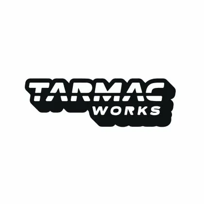

Tarmac Works is founded
The company was founded in Hong Kong by car and model-car enthusiasts with the aim of creating detailed scale models for collectors.
DIECAST DISTRICT / BRAND ENCYCLOPEDIA 08

Detailed miniature road cars, racing machines and automotive collaborations from a Hong Kong-based team of model-car enthusiasts.
START HERE
Tarmac Works was founded in 2014 by a team of car and model-car enthusiasts based in Hong Kong. The brand describes its main focus as premium-quality 1:64 scale model cars, while also producing models in 1:43 scale and other formats.
Its catalogue covers both road and motorsport subjects, from production cars and modified builds to race cars with detailed liveries. Tarmac Works also works with automotive brands, designers, model makers and other partners on collaborative releases.
One useful thing for new collectors to understand is that Tarmac Works uses different product families for different purposes. Global64, Hobby64, Hobby64+, Road64, Parts64, Trucks64 and Hobby43 each have their own focus and features.
QUICK NAVIGATION
THE STORY
The company was founded in Hong Kong by car and model-car enthusiasts with the aim of creating detailed scale models for collectors.
The brand's first model was a Honda Civic EG6 in 1:18 scale, produced in resin. This marked the beginning of its model-car catalogue.
Tarmac Works introduced its first 1:64 Hobby64 model, also based on the Honda Civic EG6. The 1:64 range became a major part of the brand's identity.
The Honda Civic EG6 appeared in a special collaboration connected with PlayStation's Gran Turismo Sport, bringing miniature car collecting and virtual racing culture together.
The brand introduced its Owners Club and a membership-exclusive model. The club became another way for collectors to connect with the brand and special releases.
Tarmac Works announced its first 1:64 Ferrari model in collaboration with IXO Models, expanding its licensed vehicle subjects.
The Trucks64 line was introduced, beginning with a licensing partnership involving Mitsubishi Fuso Truck and Bus Corporation.
Tarmac Works continues to produce road cars, race cars, trucks, accessories and collaborative models across several product families.
The milestones above are drawn from Tarmac Works' own brand history. Product families and release availability change over time, so check the official product pages for current information.
WHAT MAKES IT TARMAC WORKS?
Many Hobby64 releases reproduce race cars with specific event liveries, numbers, sponsors and competition details.
Global64 and Road64 include production and modified road cars, giving collectors a broad selection beyond race grids.
Tarmac Works works with automotive brands, designers, teams and other model companies on selected collaborative releases.
Many hobby-grade models are supplied in display cases. Packaging and presentation depend on the product family.
Series labels matter. Two Tarmac Works cars may both be 1:64 but differ in intended use, wheel behaviour, packaging and level of display-focused detailing.
EXPLORE THE LINEUP
The brand's official descriptions explain the main differences between these ranges. Always check an individual model's listing for its exact specification.
Detailed die-cast models designed to work as collectibles and as rolling toy cars. Tarmac Works describes the wheels as rolling properly, with packaging that may be a clamshell blister or paper box.
Hobby-grade die-cast models, often featuring race cars and modified cars. Authentic ride height is prioritised, so wheels may not roll as freely as on play-focused models. Most come in a display case.
A Hobby64-style model with an opening front or rear bonnet and a detailed engine bay. Check the exact model because the opening section depends on the casting.
A line focused on road-going vehicles. Check the official release description for the specific car, finish, scale and features.
Accessories for building miniature automotive scenes, ranging from garage tools and rooftop parts to pit-garage elements.
A 1:64 truck line introduced in 2023. Its launch included a licensing partnership with Mitsubishi Fuso Truck and Bus Corporation.
Detailed die-cast models in 1:43 scale. This offers a larger display format than the brand's best-known 1:64 lines.
Selected models are developed with partner brands, designers or other model makers. Packaging and product details identify the collaboration.
Not every product family is released continuously or in every region. Older catalogues and retailer listings may show ranges that are not currently available.
PICK YOUR STYLE
Start by looking at Global64. The official description positions it as a detailed collectible that can also be played with, with properly rolling wheels.
Explore Hobby64. It commonly features race and modified cars, display cases and an emphasis on authentic ride height.
Look at Hobby64+ releases. The range adds an opening front or rear bonnet and detailed engine bay to the Hobby64 concept.
Explore Trucks64 for 1:64 commercial vehicles and Parts64 for miniature garage and scene-building accessories.
SIZE & CONSTRUCTION
Tarmac Works' main focus is 1:64 scale, and many of its best-known product families use this scale. The brand also produces 1:43 models, including the Hobby43 family.
At exact 1:64 scale, one unit on the model represents 64 of the same units on the real vehicle. For example, a real car that is 4,480 mm long would measure 70 mm at exact 1:64 scale.
Different vehicles have different real-world dimensions, so a 1:64 truck should be much longer than a 1:64 compact car. Always check the product listing for the stated scale and dimensions.
Product families may differ in how their wheels roll and how they are packaged. Hobby-grade models may prioritise authentic ride height over free-rolling play performance.
FIND YOUR FAVOURITE
Modern GT racing machines, with their aerodynamic bodywork, race numbers, team colours and sponsor liveries.
Rally subjects can include recognisable competition cars and liveries from different eras of the sport.
Japanese road cars and modified builds are a strong part of the wider Tarmac Works collector appeal.
European performance cars and exotic road vehicles add variety to a collection.
Older road cars and classic designs let collectors build displays around a particular era or manufacturer.
Trucks64 and other commercial subjects can help create miniature logistics, service and paddock scenes.
LOOK CLOSER
The colours, numbers, sponsor logos and graphics used by a competition car. A model may represent a particular team, event or season.
The distance between the body and the ground. Hobby-grade models may prioritise a realistic stance over free-rolling wheels.
A front or rear engine cover that opens on selected Hobby64+ models to show engine-bay detail.
A release developed with another brand, designer, team or model company. Check the product description for partner details.
A protective presentation case supplied with many hobby-grade models. Packaging format varies by series.
The model's identifying code printed on the packaging or product listing. Record it to distinguish similar versions.
A special livery, collaboration or limited-looking package does not automatically guarantee high value. Check official release details, condition, demand and actual completed-sale prices.
START YOUR COLLECTION
Decide whether Global64, Hobby64, Hobby64+, Road64, Trucks64 or Hobby43 best matches your interests.
Try GT racing, rally, JDM, modified road cars, supercars, classic cars or trucks.
Read the product code, scale, series, livery and packaging details. Similar cars can have different specifications.
If you want a rolling model, check the series description. Some hobby-grade models prioritise ride height instead.
Display cases can help protect models. Measure your shelf and think about whether you want boxed or open display.
Record the model name, product code, series, scale, purchase date and price. Keep photos of the box and model.
MAKE IT YOURS
From race-winning liveries to road-car icons, find the Tarmac Works models that belong in your collection.
Add cars to My Garage ↗BUY SMART
Check whether the model is Global64, Hobby64, Hobby64+, Road64, Trucks64, Hobby43 or another collaboration.
Use the full product code to distinguish similar vehicles, liveries and releases.
For used models, ask for clear photos of the car, display case, packaging and any signs of damage.
Compare reputable sellers and completed sales where possible. An asking price alone does not establish value.
This guide cannot authenticate an individual model. If a listing is unclear, request additional photos and compare the product code and details with official information.
KEEP YOUR MODELS LOOKING GOOD
Use a soft, clean cloth to remove dust from display cases. Avoid harsh cleaners that could cloud or damage clear plastic.
Long exposure to strong sunlight can affect paint and packaging. Choose a display spot away from direct sun.
Mirrors, spoilers and other fine parts can be delicate. Hold the model by sturdy areas rather than small accessories.
Store boxes or labels with their matching models so you can identify the exact release later.
QUICK ANSWERS
Tarmac Works was founded in 2014 by a team of car and model-car enthusiasts based in Hong Kong.
The brand's main focus is premium-quality 1:64 models. It also produces 1:43 models, including the Hobby43 line.
Global64 is described as a detailed die-cast model that can also be played with, with properly rolling wheels. Hobby64 is a hobby-grade line that often focuses on race and modified cars and authentic ride height; wheels may not roll as freely.
Hobby64+ adds an opening front or rear bonnet and a detailed engine bay to the Hobby64 concept.
Parts64 is an accessory line with items such as garage tools, rooftop parts and pit-garage elements.
Trucks64 is Tarmac Works' 1:64 truck line, introduced in 2023 with a licensing partnership involving Mitsubishi Fuso Truck and Bus Corporation.
No. The official description notes that Hobby64 wheels may or may not roll freely because the line prioritises authentic ride height. Global64 is described as having properly rolling wheels.
KEEP LEARNING
Diecast District is an independent collector project and is not affiliated with or endorsed by Tarmac Works or its collaborators. Brand names and trademarks belong to their respective owners. Product features, series names and availability can change; verify individual models using official product information.